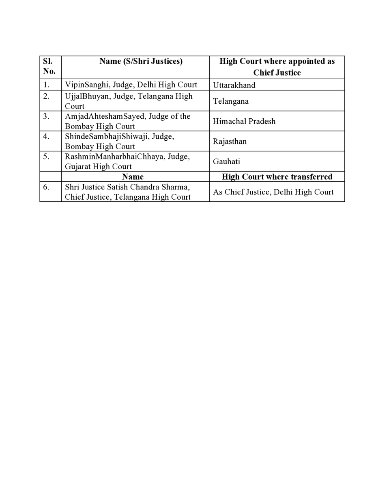

Centre has notified the appointment of new Chief Justices in Five High Courts. Telangana High Court Chief Justice Satish Chandra Sharma has been transfered. The Centre on Sunday notified appointment of Chief Justices in High Courts of Uttarakhand, Telangana, Himachal Pradesh, Rajasthan and Gauhati. It has also approved transfer of Andhra Pradesh High Court Chief Justice, Satish Chandra Sharma to the Delhi High Court as the Chief Justice. The Law and Justice Ministry issued the notifications for appointment of Justice Vipin Sanghi, acting Chief Justice of Delhi High Court as Chief Justice of Uttarakhand High Court, and Justice Ujjal Bhuyan, judge in Telangana High Court as Chief Justice over there. The Centre's notification comes after recommendation made by the Supreme Court Collegium led by Chief Justice of India N V Ramana last month.
